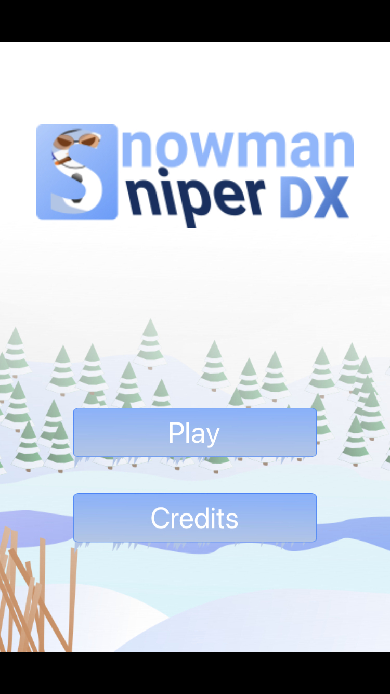
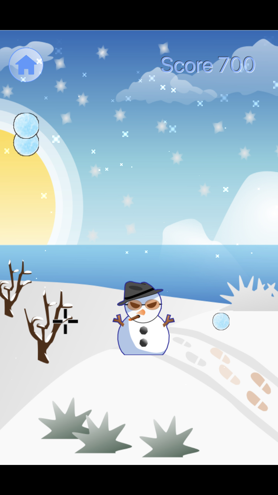
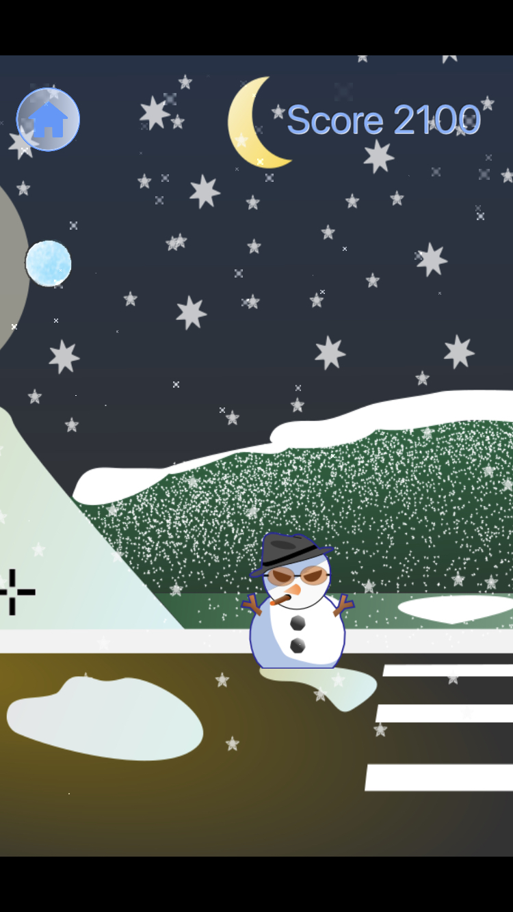

Introducing Snowman Sniper DX 🎉



Meet the Creator 👋
Hello, I'm Justin Woodring.
I created Snowman Sniper years ago as a labor of love. Now I'm bringing a revised version, Snowman Sniper DX, to world.
Snowman Sniper DX is a fun casual game with a competitive arcade style edge. It's fun for friends or family and great for kids too! As a computer scientist by trade and profession, I respect your desire for fun, gimmick free, privacy respecting, and safe software. And I have great news for you, I'm not a money-hungry triple-A game studio and I don't want your data.
If you love Snowman Sniper DX as much as I do, share it with your friends. ❤️
Support 🔧
Current version: 1.0
Known issues:
- TBA
If you encounter an unreported issue or bug drop me a line at, jwoodrg@gmail.com